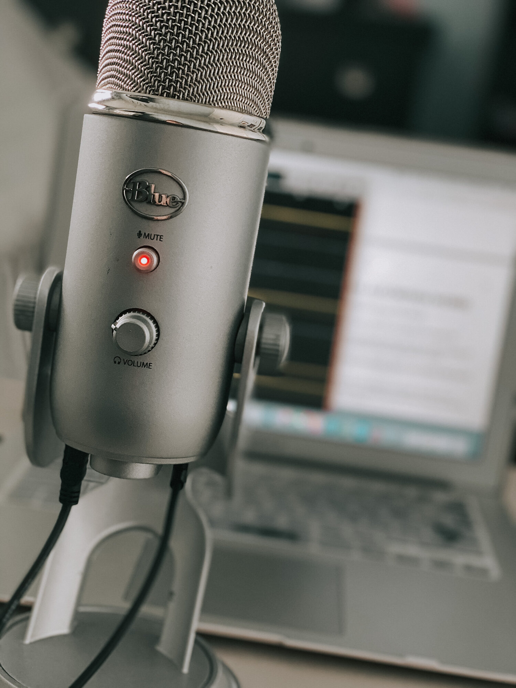
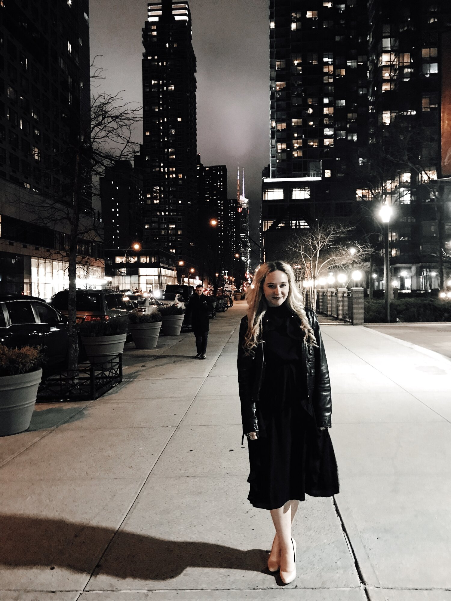

Hosted by New York City-based actress Maggie Bera, the Actor Aesthetic Podcast covers all you need to know about auditioning, performing, traveling, networking, training and building a career as a performer in the theater industry. The podcast welcomes the stories of actors and fellow creatives of all backgrounds.
Past guests on the podcast include Kara Lindsay (Newsies), Mariah Rose Faith (Mean Girls), JJ Niemann (Book of Mormon), Ben Crawford (Phantom), Lindsay Heather Pearce (Wicked), Tyler McKenzie (Hamilton), Shereen Pimentel (West Side Story), Paloma Garcia-Lee (Moulin Rouge), Ciara Alyse Harris (Dear Evan Hansen), Kimberly Marable (Hadestown), Jennifer Apple (The Band’s Visit), Courtney Mack (Six), and many more.
Just Released


Guests
{%for row in guest%}
{%endfor%}
{{row[5]}}
{{ row[1]}}
MAGtalkX
{%for row in maggie%}
{%endfor%}
{{ row[1]}}
What Others Are Saying...

“I had been going through a rough last couple of years after getting out of a emotionally abusive relationship and losing my dad and ultimately losing all of my drive and motivation and passion for things like theatre that I used to have. That was until my best friend Desha Murray introduced me to this podcast and what Maggie Bera does. Not only is she an inspiration to me but also has helped give me back my courage, motivation, and drive in theatre and made me realize all over again why I love it so much. It’s like falling In love with performing all over again. Maggie has and continues to inspire me daily with the podcast and her messages because it makes me be a better version of me and also do what I love and gives me strength to overcome my hardships and work harder than I ever have to be the actor I truly want to be. I can’t think Desha or Maggie enough for what they have done for me. 💙” — TYLER M
“This podcast is a joy, and totally improves my Monday! I am super thankful for Maggie’s bubbly and open personality; she is so easy to listen to and knowledgeable on this content!! Thank you for this amazing and inspiring podcast for anyone who loves broadway. :)” — ELLEDA S
“I listen to these podcasts whenever I’m second-guessing myself as a performer and need a pick me up, and they are so helpful! Maggie is great at connecting with her listeners and making her podcasts personal and relatable! It is so easy to doubt yourself and feel down in this business but these podcasts are great for reminding you that you’re not alone! I definitely recommend!” — KELSEY M

“As someone who did not go to college for theatre and got started auditioning pretty late in the game, there were a lot of things I didn’t know coming into the industry. (And plenty of questions I was embarrassed to ask!) This podcast is so informative and SO helpful! It is essential to any aspiring actor to give this one a listen. THANK YOU, Maggie for taking a lot of the stress out of getting started!” — GINA